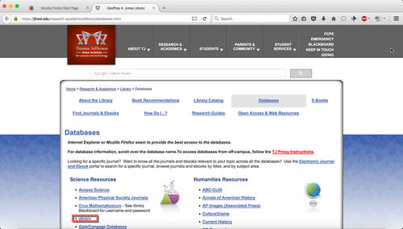

Chrome Proxy Documentation
From Livedoc - The Documentation Repository
Prerequisites
NOTE: You MUST have done the following before you can set up your TJ Proxy
- Log in at a TJHSST-provided Windows Computer (Laptop or Desktop)
Configure Proxy
Follow the screenshots below to configure your proxy in Chrome.
- Open the menu by clicking the 3 bars at the top right.
- Click on 'Settings.'
- Click on 'Show advanced settings.'
- Scroll down and click on 'Change proxy settings.'
- Follow the specific instructions for your operating system to set up Automatic Proxy Configuration via the URL https://pac.tjhsst.edu/
{kind=link}
{kind=link}
Test It Out
Note: You MUST use the database links provided at https://tjhsst.edu/research-academics/library/databases.html
-

- Navigate to https://tjhsst.edu/research-academics/library/databases.html
- Select the 'ebrary' database
- Enter your username and password. The format is <graduating year><first initial><first seven letters of last name>(In the example, the student would be Omkar Kulkarni, Class of 2019)
- You should see a page like this, with Thomas Jefferson High School for Science and Technology at the top
- You're finished!
{kind=link}
{kind=link}
{kind=link}